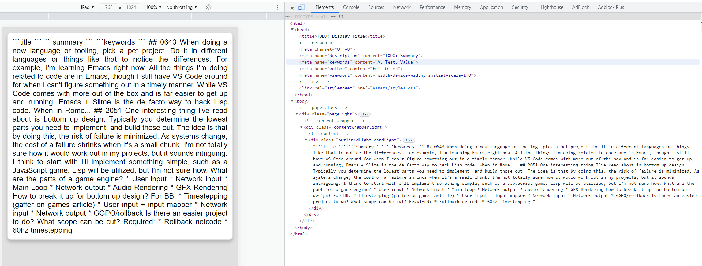

I'll make one more change before starting on some basic parsing by adding a ContentWrapper class. All this will do is add a 16px padding around the blog content to ensure it looks pretty.
// html/stylesheet/class.rs
#[derive(Debug, Clone, PartialEq)]
pub enum Class {
Card { dark_mode: bool },
ContentWrapper,
Outlined { dark_mode: bool },
Page,
}
...
impl Class {
...
pub fn css(&self, theme: &Theme) -> Css {
match self {
Class::Card { dark_mode } => card(self, *dark_mode, theme),
Class::ContentWrapper => content_wrapper(self),
Class::Outlined { dark_mode } => outline(self, *dark_mode, theme),
Class::Page => page(self),
}
}
...
}
...
fn content_wrapper(class: &Class) -> Css {
format!(
".{} {{
padding: 16px;
}}
",
class.selector().to_str()
)
.into()
}
That gets wired up to the Page:
// html/page.rs
impl Html for Page {
fn to_html(&self) -> String {
format!(
"
<!DOCTYPE html>
<html>
<head>
<title>{}</title>
<!-- metadata -->
{}
<!-- css -->
{}
</head>
<body>
<!-- page class -->
<div class={}>
<!-- content wrapper -->
<div class={}>
<!-- content -->
{}
</div>
</div>
</body>
</html>
",
self.title,
self.metadata.to_html(),
self.css.to_html(),
stylesheet::Class::Page.selector().to_str(),
stylesheet::Class::ContentWrapper.selector().to_str(),
self.content.to_html()
)
}
}

With that done, parsing can begin. I'll sketch out the basic outline now and fill it in later.
First I'll add a new trait, HtmlElement. This will enable the generation of elements from ContentIr.
// html/mod.rs
mod css_link;
pub mod element;
mod metadata;
mod page;
mod stylesheet;
pub use css_link::CssLink;
pub use element::Element;
pub use metadata::Metadata;
pub use page::Page;
pub use stylesheet::Stylesheet;
pub trait Html {
fn to_html(&self) -> String;
}
pub trait HtmlElement {
fn to_element(&self) -> Element;
}
I'll stub a new function to return a CodeBlock element. This will be filled in when I get through parsing.
// html/element.rs
pub fn code_block(s: &str) -> Element {
todo!()
}
A new parse_contents module is added under the parser. The core of it will be an execute() method. I stubbed it out as well to get the scaffolding in place.
// parser/md/parse_contents/mod.rs
mod content_ir;
use crate::{Item, Location, Res};
pub use content_ir::ContentIr;
pub fn execute(contents: String, location: Location) -> Res<ContentIr> {
Res::Ok(Item {
item: ContentIr::Text(contents),
location: Some(location),
})
}
A new IR type is added for the content.
// parser/md/parse_contents/content_ir.rs
use crate::html::{element, Element, HtmlElement};
#[derive(Clone, Debug, PartialEq)]
pub enum ContentIr {
Codeblock(String),
Text(String),
}
impl HtmlElement for ContentIr {
fn to_element(&self) -> Element {
match self {
ContentIr::Codeblock(text) => element::code_block(text),
ContentIr::Text(text) => element::text(text),
}
}
}
The md parser is now updated to reflect these changes.
// parser/md/mod.rs
mod filename;
mod parse_contents;
use super::IntermediateRepresentation;
use crate::{Item, Location, Res};
pub use parse_contents::ContentIr;
#[derive(Clone, Debug, PartialEq)]
pub struct Md {
pub contents: Item<ContentIr>,
pub date: String,
pub day: String,
pub default_title: String,
pub display_title: String,
pub html_file_name: String,
pub keywords: Vec<String>,
pub month: String,
pub path: String,
pub summary: String,
pub year: String,
}
pub fn parse(file_path: String, location: Location) -> Res<IntermediateRepresentation> {
let path = std::path::Path::new(&file_path);
let path_string = String::from(path.to_str().unwrap_or("".into()));
let file_name = path.file_name().unwrap().to_str().unwrap_or("").to_string();
match filename::validate(&file_name, &path_string) {
Ok(_) => {}
Err(e) => {
return Res::Error {
location: Some(location),
msg: e,
}
}
}
const DATE_LEN: usize = 10;
let date = &file_name[..DATE_LEN].to_string().replace(".", "_");
let default_title = &file_name[DATE_LEN..]
.to_string()
.replace("_", "")
.replace(".md", "");
let date = date.clone().replace("_", ".");
let split: Vec<String> = date.split(".").map(|m| m.to_string()).collect();
const YEAR_IDX: usize = 0;
const MONTH_IDX: usize = 1;
const DAY_IDX: usize = 2;
let contents = match std::fs::read_to_string(path) {
Ok(s) => s,
Err(e) => {
return Res::Error {
location: Some(location),
msg: format!("{:#?}", e),
}
}
};
let mut warning = None;
let contents = match parse_contents::execute(contents, location.clone()) {
Res::Ok(item) => item,
Res::Warn { item, msg } => {
warning = Some(msg);
item
}
Res::Error { location, msg } => return Res::Error { location, msg },
};
let display_title = "TODO: Display Title".to_string();
let keywords = vec!["A".into(), "Test".into(), "Value".into()];
let summary = "TODO: Summary".to_string();
let item = Item {
item: IntermediateRepresentation::Md(Md {
contents,
date: date.clone(),
day: split[DAY_IDX].clone(),
default_title: default_title.clone(),
display_title,
html_file_name: format!("{}_{}.html", date, default_title),
keywords,
month: split[MONTH_IDX].clone(),
summary,
path: path_string.clone(),
year: split[YEAR_IDX].clone(),
}),
location: Some(location),
};
if let Some(warning) = warning {
Res::Warn { item, msg: warning }
} else {
Res::Ok(item)
}
}
And finally the generator is updated to include this.
// generator/mod.rs
...
fn generate(ir: &Item<IntermediateRepresentation>, context: Arc<Context>) -> Res<()> {
let output_dir = context.output.to_string();
let path;
let contents;
let css_link: CssLink = format!("{}/{}", ASSETS, "styles.css").into();
match &ir.item {
IntermediateRepresentation::Css(css) => {
path = format!("{}assets/{}", output_dir, css.file_name);
contents = css.contents.clone();
}
IntermediateRepresentation::Img(img) => {
path = format!("{}assets/{}", output_dir, img.file_name);
contents = img.contents.clone();
}
IntermediateRepresentation::Md(md) => {
path = format!("{}{}", output_dir, md.html_file_name);
let page = Page {
content: md.contents.item.to_element(),
css: css_link,
file_name: md.html_file_name.clone(),
metadata: Metadata {
author: context.author.clone(),
keywords: md.keywords.clone(),
summary: md.summary.clone(),
},
title: md.display_title.clone(),
};
contents = page.to_html().as_bytes().to_vec();
}
}
match fs::write(path, contents) {
Ok(_) => Res::Ok(Item {
item: (),
location: None,
}),
Err(e) => Res::Error {
msg: format!("{:#?}", e),
location: ir.location.clone(),
},
}
}
...
With all the scaffolding in place I can move on to the fun parts.